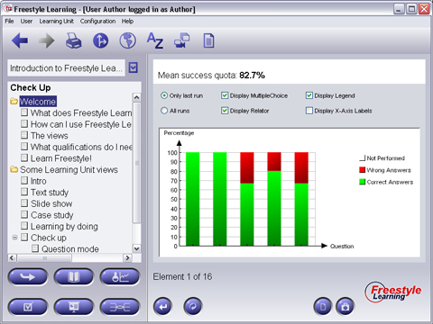

In Evaluation Mode, a bar chart will be displayed showing your results as colored percent quota for each question passed. One bar for each question contained as childs of your currently selected node from the Structure Tree is shown. If you did not pass a question so far, the bar will be displayed in light gray. In the upper area of the Content Panel, you can see your overall success quota labeled in percent. You can turn on and off a legend for the bar chart and labels for the question bars. You can also decide if you want to see only your last run's results or your overall quota for this Learning Unit. Hint: Evaluation data is individually recorded and saved for every user and for every Learning Unit.

View Specific Element Interaction Buttons
| Delete History | Deletes History | |
 |
Exit | Exit Evaluation Mode |
Back to Main Help Page